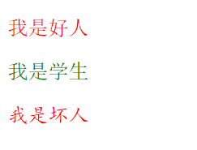

原文连接:https://www.cnblogs.com/ruigege0000/p/11111902.html
一、id选择器和classable选择器的区别
|
选择器 |
CSS中的开头 |
HTML标签可以绑定几个 |
是否可重复 |
用途 |
|
id选择器 |
# |
仅能一个 |
不可以重复（一个标签里仅有一个） |
一般情况下是给JS用的，除非特殊情况下才给设置样式用 |
|
class选择器 |
. |
可以多个 |
可以重复（多对多的关系） |
专门用来设置样式的 |
二、选择器的技巧可以节省代码行数
看好问题：做一个网页
“我是好人”（颜色：红色；格式：宋体）
“我是学生”（颜色：绿色；格式：宋体）
”我是坏人“（颜色：红色；格式：楷体）
正常的编码是：就是按照一段一段的写
好处是清晰，每一段知道设置的什么，互不干扰，但是冗余代码太多。
我们需要转换思路，以属性为中心，先设置好，在配到标签上去，可以节省代码。
.d1{
color:red;
font-family: 宋体;
}
.d2{
color:green;
font-family: 宋体;
}
.d3{
color:red;
font-family: 楷体;
}
......省略代码......
<p class="d1">我是好人</p>
<p class="d2">我是学生</p>
<p class="d3">我是坏人</p>
我们改进代码：显示的一致，这也是对class性质（多标签可对多个class选择器）的应用，否则我们全用id选择器不也一样，一旦大网站开发，涉及到文本图片是庞大，先定义好格式，配到文本图片
.color_red{
color: red;
}
.color_green{
color:green;
}
.ff_songti{
font-family: 宋体;
}
.ff_kaiti{
font-family: 楷体;
}
......省略代码......
<p class="color_red ff_songti">我是好人</p>
<p class="color_green ff_songti">我是学生</p>
<p class="color_red ff_kaiti">我是坏人</p>

二、后代选择器
1.定义：找到指定标签的所有后代标签然后设置属性。用途即为：企业开发会有上千上万标签，因此挨个写class或者id就累死了，因此div应运而生。
2.格式：
标签属性1 标签属性2｛
属性：值；
｝
3.含义：先找到名称叫做标签名称1的标签，然后在这个标签下面去查找所有名称为标签名称2的标签，然后再设置属性
4.注意：
（1）后代选择器必须使用空格隔开
div p{
color:red;
}
..........省略代码........
<p>我是段落1</p>
<div>
<p>我是红的1</p>
<p>我是红的2</p>
</div>
（2）后代不仅仅是儿子，也包括孙子/重孙子等等
div p{
color:red;
}
..........省略代码......
<div>
<ul>
<li><p>重孙子标签p，试一试</p></li>
</ul>
</div>
（3）后代选择器不仅仅可以使用标签名称，还可以使用其他选择器（这个性质更具扩展性，代表div下面一堆各种标签都统一了格式，选择器样式会有这么就是为了减轻我们的编码负担，能够适配各种场景，找到最优解）
一个id的例子：
#test1 p{
color:blue;
}
..........省略代码......
<div id="test1" class="test2">
<p>我是红的1</p>
<p>我是红的2</p>
</div>
另一个class的例子：
.test2{
color:green;
}
..........省略代码......
<div id="test1" class="test2">
<p>我是红的1</p>
<p>我是红的2</p>
</div>
（4）div标签里面的标签也可以使用id，class属性也都能搭配
格式：只演示id的，class的把#换成.就行了
#div的id名称 #div里面的标签的id名称｛
属性：名称；
｝
（5）div标签可以向下无限延伸
格式：
div ul li p{
属性：值：
｝
例如：
div ul li p{
color:red;
}
</style>
</head>
<body>
<p>我是段落1</p>
<div id="test1" class="test2">
<p>我是红的1</p>
<p>我是红的2</p>
<ul>
<li><p>重孙子标签p，试一试</p></li>
</ul>
</div>
二、源码：
d70_id_selector&class_selector
d71_posterity_selector
地址:
https://github.com/ruigege66/HTML_learning/tree/master
2.CSDN：https://blog.csdn.net/weixin_44630050（心悦君兮君不知-睿）
3.博客园：https://www.cnblogs.com/ruigege0000/
4.欢迎关注微信公众号：傅里叶变换，后台回复“礼包”获取Java大数据学习视频礼包